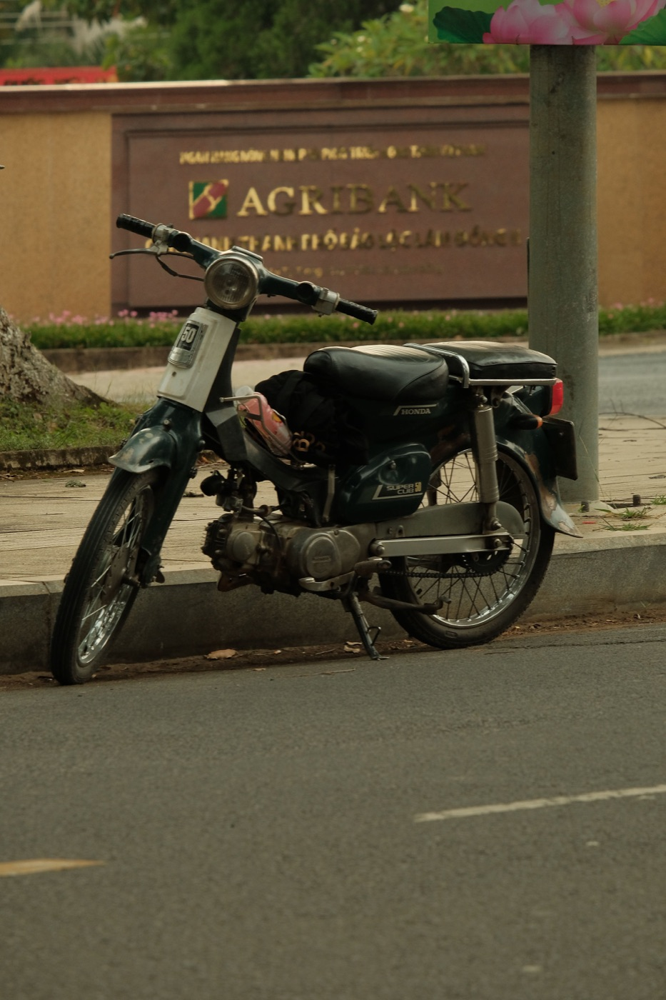

Слабый аккумулятор на байке: признаки и что делать
Аккумулятор редко перестаёт работать совсем без предупреждения. Обычно сначала меняется звук стартера, свет становится слабее, а запуск после стоянки занимает больше времени. Если заметить эти признаки заранее, можно спокойно доехать в сервис и не остаться с неподвижным байком.
Основные признаки
- стартер вращает двигатель медленнее обычного;
- при нажатии кнопки слышен щелчок, но запуска нет;
- приборная панель или фара заметно тускнеют во время запуска;
- сигнал звучит слабее, поворотники мигают необычно;
- после ночной стоянки проблема сильнее, чем после поездки;
- электростартер работает нестабильно, хотя кик-стартер запускает мотор.
Один симптом ещё не доказывает вину батареи. Похожие проявления дают слабый контакт клемм, неисправность стартера, предохранитель или проблема с зарядкой.
Что проверить без разборки
Убедись, что выключатель двигателя стоит в рабочем положении, боковая подставка убрана, тормозная ручка нажата и в баке есть топливо. Посмотри, включается ли приборная панель и меняется ли яркость при попытке запуска. Не нажимай стартер непрерывно: делай короткие попытки с паузами, чтобы не перегревать систему.

Можно ли продолжать ехать
Если двигатель уже работает нормально, свет стабилен и нет запаха перегрева, короткая поездка прямо в сервис обычно разумнее многократных остановок. Но заглохший двигатель может больше не запуститься. При мигающей панели, пропадающем свете, нагреве проводки или запахе горелого движение лучше прекратить и вызвать помощь.
Прикуривание и зарядка
Неправильная полярность способна повредить электронику. Не подключай неизвестное автомобильное зарядное устройство и не экспериментируй с проводами, если не знаешь напряжение системы и порядок подключения именно для этой модели. Безопаснее попросить мастера измерить напряжение батареи и работу зарядной системы.
Почему новый аккумулятор тоже может сесть
- байк долго стоит без поездок;
- остался включён свет или дополнительное оборудование;
- держатель телефона и аксессуары подключены неправильно;
- клеммы ослабли или окислились;
- система зарядки не восполняет энергию;
- частые очень короткие поездки не успевают восстановить заряд.
Что попросить проверить в сервисе
Нужны не только слова «батарея плохая», а измерение напряжения в покое, под нагрузкой и при работающем двигателе. Мастер также проверяет клеммы, утечку тока, предохранители и зарядку. Замена одной батареи без устранения причины может дать ту же проблему через несколько дней.
Профилактика
Регулярно ездить полезнее, чем запускать байк на несколько минут на месте. Перед долгим отъездом подготовь хранение, а после возвращения не планируй сразу дальнюю поездку. Обрати внимание на изменение звука стартера — владелец обычно слышит его раньше, чем проблема становится критической.
Короткий вывод
Медленный стартер, тусклый свет и щелчки — повод проверить аккумулятор и систему зарядки, а не продолжать бесконечные попытки запуска. Если байк уже остановился в дороге, используй инструкцию что делать при поломке. Перед долгой стоянкой прочитай материал как оставить байк на месяц.